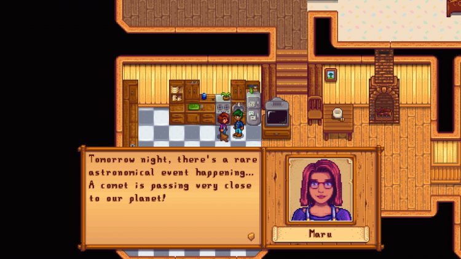

The Characters of Stardew Valley

ğ™¾ğš— ğšğš‘ğš’𚜠ğš ğšğš‹ğš™ğšŠğšğš, ğš¢ğš˜ğš ğš ğš’ğš•ğš• ğšğš’ğš—ğš ğšŒğš˜ğš—ğšğšğš—ğš ğšŠğš•ğš• ğšŠğš‹ğš˜ğšğš ğšœğš˜ğš–ğš ğš˜ğš ğš–𚢠ğšğšŠğšŸğš˜ğš›ğš’ğšğš ğšŒğš‘ğšŠğš›ğšŠğšŒğšğšğš›ğšœ ğš’ğš— ğšğš‘ğš ğšğšŠğš–ğš, ğš›ğšŠğš—ğšğš’ğš—ğš ğšğš›ğš˜ğš– 𚊠ğšğšğšœğšŒğš›ğš’ğš™ğšğš’ğš˜ğš— ğš˜ğš ğšğš‘ğš ğšŒğš‘ğšŠğš›ğšŠğšŒğšğšğš› ğšğš˜ ğšğš‘ğšğš’ğš› ğšğšŠğšŸğš˜ğš›ğš’ğšğš ğšğš’ğšğšğšœ ğšğš˜ ğšğš‘ğšğš’ğš› 𝚜𝚙𝚎𝚌𝚒𝚊𝚕 𝚑𝚎𝚊𝚛𝚝 𝚎𝚟𝚎𝚗𝚝𝚜.
Harvey

Harvey is one of the characters available to marry in the game. He is introverted, awkward and compassionate. He is the local doctor in the town, and he runs the small clinic next to Pierre's general store.
Use this slider to indicate how much you like Harvey.
Loved Gifts


Three of Harvey's favorite things to be given are Pickles, Coffee and Wine. He also loves Super Meal, Prismatic Shard and Truffle Oil.
Heart Event

In the fourteen heart event, seen on the left, Harvey cooks the player pasta and the two eat together in their shared house. In order for this event to be triggered, the player must have upgraded the farmhouse twice and also the player must be married to Harvey.
In the ten heart event, seen on the right, Harvey takes the player on a hot-air balloon ride over the valley.
Penny

Penny is one of the characters available to marry in the game. She is introverted, anxious and clever. She serves as the local teacher, and tutors Vincent and Jas in the town library.
Use this slider to indicate how much you like Penny.
Loved Gifts


Three of Penny's favorite things to be given are Roots Platter, Poppyseed Muffin and Tom Kha Soup. She also loves Emerald, Melon and Poppy.
Heart Event

In the fourteen heart event, seen on the left, Penny asks the player if they would be opposed to her decorating the house. The player then can choose between various styles, or decline a renovation altogether.
In the eight heart event, seen on the right, Penny invites the player to talk about farming and agriculture in her daily class with Vincent and Jas.
Maru

Maru is one of the characters available to marry in the game. She is intelligent, kind and innovative. She lives and works on her robotic and scientific endeavors in the Mountains, and she also works in the clinic as a nurse.
Use this slider to indicate how much you like Maru.
Loved Gifts


Three of Maru's favorite gifts to recieve are Gold Bar, Strawberry and Battery Pack. She also loves Rhubarb Pie, Iridium Bar and Cauliflower.
Heart Event

In the fourteen heart event, seen on the left, Maru tells the player that there will be a rare astrological event the next night. The next in-game night, Maru takes the player to see the event, and she tells them to wish under the comet.
In the ten heart event, seen on the right, Maru shows the player a robot she created to take care of her parents and keep them company when she eventually moves out on her own someday.
Back